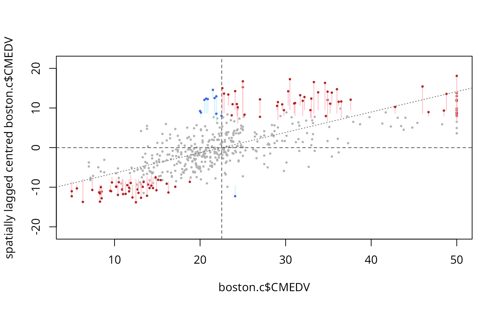

Moran drop plot
moran.plot.drop.RdA version of the Moran scatterplot (see moran.plot) supplemented by lines indicating p values for visual inspection of statistical significance.
Usage
moran.plot.drop(x, listw, locmoran, alpha = 0.05, adjusted_p = NULL,
significant = TRUE, xlab = NULL, ylab = NULL, return_df = TRUE,
spChk = NULL, labels = NULL, zero.policy=attr(listw, "zero.policy"))Arguments
- x
a numerical vector holding the attribute of interest
- listw
a
listwspatial weights object- locmoran
a fitted object of type
localmoran- alpha
default 0.05; the desired significance level regarding local Moran's I
- adjusted_p
default NULL; an optional vector of p values adjusted to account for multiple testing as is returned by
p.adjustSP; if NULL, standard normal approximation is used to determine critical values- significant
default TRUE; a parameter indicating whether to display critical value distances of significant (default) or non-significant observations
- xlab
default NULL; an optional label for the x-axis
- ylab
default NULL; an optional label for the y-axis
- return_df
default TRUE; invisibly return a data.frame object, if FALSE do not return anything
- spChk
default NULL to use
get.spChkOption(); should the locmoran names be checked against the listw spatial objects for identity integrity, TRUE, or FALSE- labels
default NULL; no labels are plotted by default; region IDs from the
listwobject are used as labels of significant observations if set to TRUE; custom labels are used if a character vector is provided- zero.policy
default option stored in the listw object; if FALSE stop with error for any empty neighbour sets, if TRUE permit the weights list to be formed with zero-length weights vectors
Details
The Moran drop plot is a version of the Moran scatterplot supplemented by visual indications of p values. The standard Moran scatterplot provides information about the effect size but not about the level of confidence to determine whether the effects shown might be more than just random outcomes. The Moran drop plot marks significant points in red (positive) and blue (negative spatial autocorrelation) and adds so-called drop lines connecting the significant observations to the scatterplot positions of their associated critical values. The coordinates of the latter are determined either under the assumption of approximate standard normality of the z-scores of the local Moran's I values, or based on p values provided through adjusted_p. In the latter case, the critical value is approximated based on the observation with the highest adjusted p value that still satisfies the selected significance level. The longer the lines, the lower the associated p values. The visualisation thus enables visual inspection of statistical significance while maintaining the relationship to both attribute value ranges and scatterplot quadrants. It is also possible to invert the visualised relationship and display the distances of non-significant observations to their corresponding critical values (if significant is set to FALSE).
Value
When return_df is TRUE, a data frame object with the following members is returned:
- labels
either the labels provided or the region ids, if not specified
- x
the attribute values
- wx
the spatial lags of the centred attribute values
- b
the y-coordinates (i.e. hypothetical spatial lags) of the critical values given x
- line_lengths
the absolute distances between b and x
References
Westerholt, R. (2024): Extending the Moran scatterplot by indications of critical values and p-values: introducing the Moran seismogram and the drop plot. Proceedings of the 32nd Annual GIS Research UK Conference (GISRUK), Leeds, UK. https://doi.org/10.5281/zenodo.10897792
Author
Rene Westerholt rene.westerholt@tu-dortmund.de
Examples
# Boston example (CMEDV; owner-occupied housing in USD)
data(boston)
boston.tr <- sf::st_read(system.file("shapes/boston_tracts.gpkg", package="spData")[1])
#> Reading layer `boston_tracts' from data source
#> `/home/rsb/lib/r_libs/spData/shapes/boston_tracts.gpkg' using driver `GPKG'
#> Simple feature collection with 506 features and 36 fields
#> Geometry type: POLYGON
#> Dimension: XY
#> Bounding box: xmin: -71.52311 ymin: 42.00305 xmax: -70.63823 ymax: 42.67307
#> Geodetic CRS: NAD27
boston.nb <- poly2nb(boston.tr)
boston.listw <- nb2listw(boston.nb)
moran.plot.drop(boston.c$CMEDV, boston.listw, localmoran(boston.c$CMEDV, boston.listw), 0.01,
significant = TRUE, labels = NULL)
